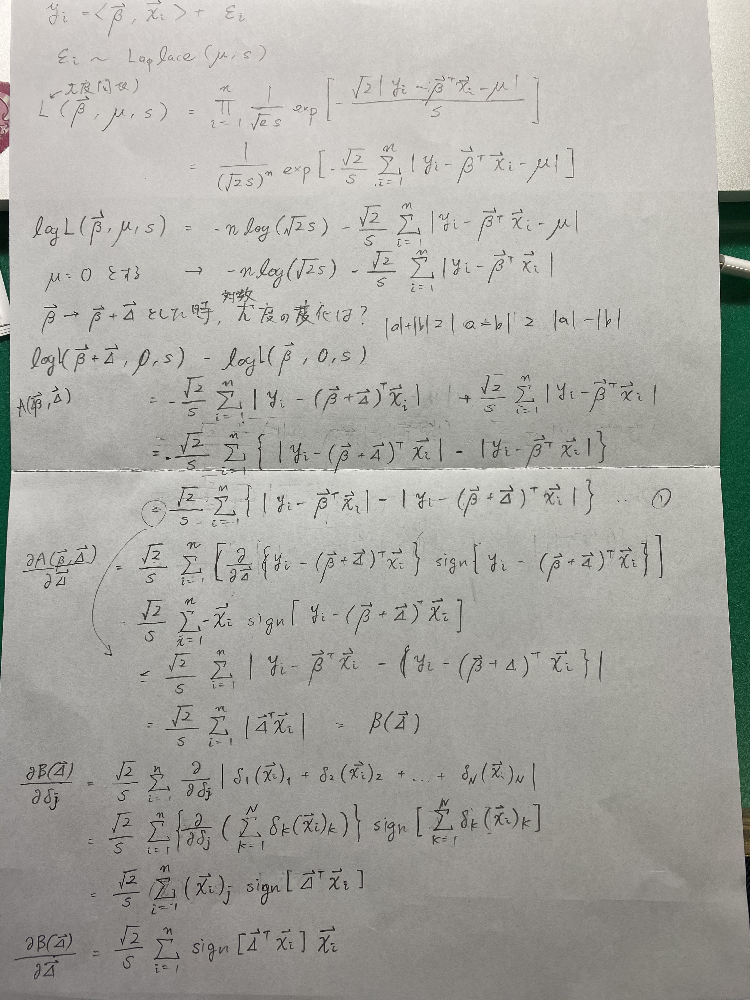

LAD(Least Absolute Deviation)
LAD(Least Absolute Deviation) を見ている。これは、残差を L1 ノルムにした回帰問題一般のこと。
- カレル大学卒論 が結構まとまっている。
- 最尤推定による近似的手法 は軽く読んだ。各傾きと切片を固定して逐次更新していく。更新時は中央値を拾ってくる。うーん中央値だと高速推定が厳しい。。。
ラプラス分布の最尤推定しようとしてもがく。対数尤度とって見てみても、単純な絶対値和が出て止まるし、反復スケーリング法を参考に、パラメータの増分を加えた時の対数尤度の下限を求めようとしたが上手く行かず。4 時間飛ばす。

最尤推定の計算のあがき
あがいて「A maximum likelihood approach to least absolute deviation regression」を引用している文献を漁ったら辞書学習を L1 にしているやつが、やっぱりいた。
- Online Robust Non-negative Dictionary Learning for Visual Tracking パーティクルフィルターを使っておる。
上の文献で使ってる Huber Loss …
more ...